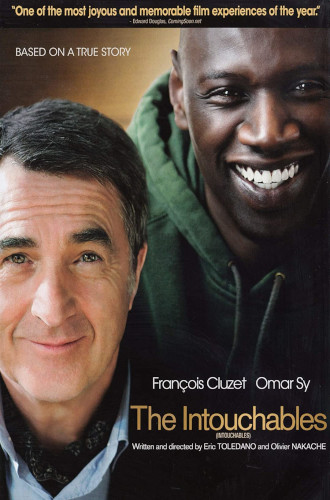

<DOTYPE! html>
<html>
	<head>
		<title> Nietykalni (Intouchables) (2011) </title>
		<meta charset="utf-8">
		<link rel="stylesheet" type="text/css" href="baby.css">
	</head>
	<body>
		<div class="red"> Nietykalni (Intouchables) (2011) </div class="red">
		<div class="orange"> Sparaliżowany milioner zatrudnia do opieki młodego chłopaka z przedmieścia, który właśnie wyszedł z więzienia. <a href="https://www.filmweb.pl/film/Nietykalni-2011-583390"> Czytaj więcej... </a> 
			<br> <br> <table>
				<tr> <td><b>Postać</b><td> <td><b>Aktor<b/></td> </tr>
				<tr> <td> Philippe </td> <td> Francois Cluzer </td> </tr>
				<tr> <td> Driss </td> <td> Omar Sy </td> </tr>
				<tr> <td> Yvonne </td> <td> Anne Le Ny </td> </tr>
				<tr> <td> Magalie </td> <td> Audrey Fluerot </td> </tr>
				<tr> <td> Marcelle </td> <td> Clotilde Mollet </td> </tr>
				<tr> <td> Elisa </td> <td> Alba Gaia Bellugi </td> </tr>
				<tr> <td> Adama </td> <td> Cyril Mendy </td> </tr>
				<tr> <td> Albert </td> <td> Christian Ameri </td> </tr>
			</table>
			<div class="white"> <br>
				Czy oglądałeś/aś ten film? <br>
				<input type="radio" id="y" name="watch">
  				<label for="y"> tak </label>
				<input type="radio" id="n" name="watch">
  				<label for="n"> nie </label> <br>
				Jeśli tak, czy podobał Ci się? <br>
				<input type="radio" id="ye" name="like">
  				<label for="ye"> tak </label>
				<input type="radio" id="no" name="like">
  				<label for="no"> nie </label> <br>
				<button type="button" onclick="alert('Dziękuję za wypełnienie!')"> Wyślij </button>
			</div class="white">
		</div class="orange">
		<div class="yellow">  </div class="yellow">
		<div class="footer"> autor: Kacper Szczęsnowicz kl. 2TA </div class="footer">
	</body>
</html>